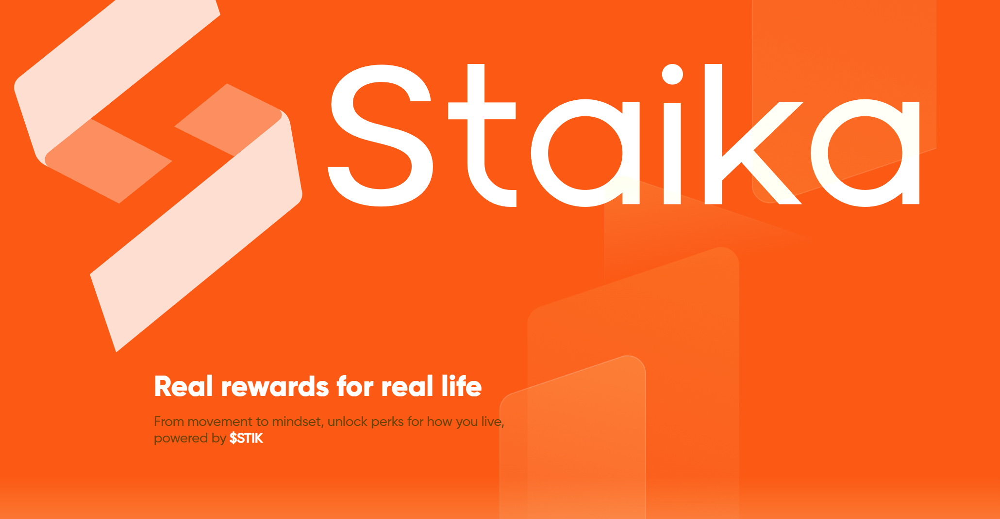
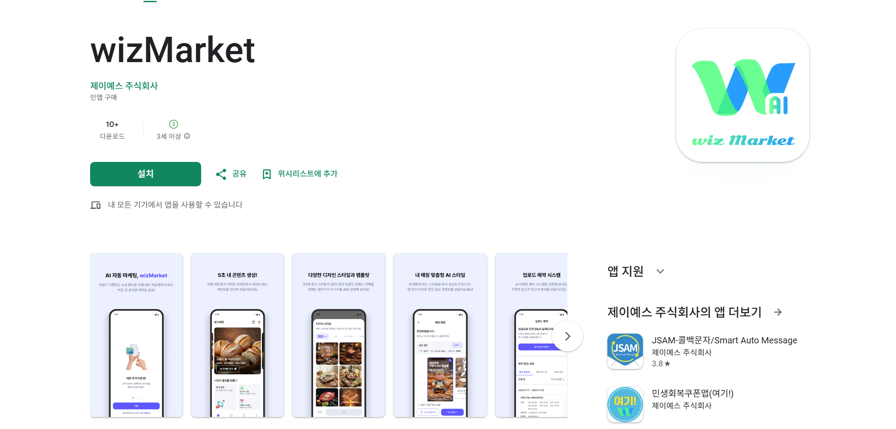
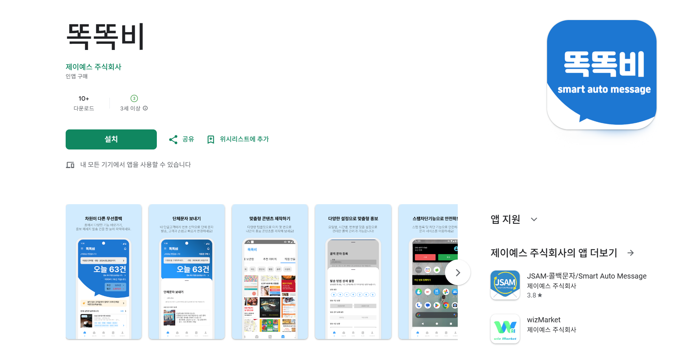

안녕하세요 개발자 2년차 문승종입니다.
현재 한국방송통신대학교 컴퓨터과학과 2학년에 재학 중이며, 실무 경험과 학업을 병행하며 꾸준히 성장하고 있습니다.
Backend Developer · 2년차 · 29세
안녕하세요 개발자 2년차 문승종입니다.
현재 한국방송통신대학교 컴퓨터과학과 2학년에 재학 중이며, 실무 경험과 학업을 병행하며 꾸준히 성장하고 있습니다.

생성형 AI 서비스 staika.io의 백엔드 개발자로서 서비스 운영 및 유지보수를 담당하고 있습니다.

생성형 AI 기반 상권 분석 및 광고 서비스입니다. 데이터 수집부터 인프라 구축, MVP 개발까지 전반적인 백엔드 업무를 담당했습니다.

자동 콜백 문자 서비스(똑똑비) 앱 리뉴얼 프로젝트입니다. API 및 웹뷰 개발을 담당했습니다.